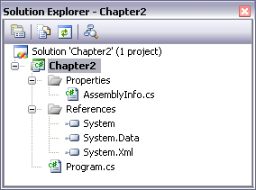
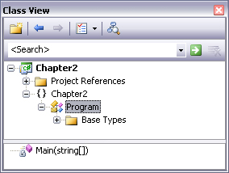

Chapter 2 - Building C# Applications
Content
The point of this chapter is to provide a tour of various .NET development options.
The chapter opens with an examination of working with the C# command line compiler,
and the simplest of all text editors, Notepad.
Next, the chapter describes about feature-rich integrated development environment (IDEs).
To this end, you will be introduced to an open source IDE named SharpDevelop.
The main of this chapter is introducing Visual Studio. This chapter wraps up with a quick tour of a number of
complementary .NET development tools and describes where to obtain them.
The C# Command-Line compiler
The C# Command-Line (csc.exe) is included with the .NET Framework 2.0 SDK. While it is true that you may
never decide to build a large scale application using the command-line compiler, it is important to understand the basics
of how to compile your *.cs files by hand.
Reads more in textbook:
- Configuring the C# Command-Line Compiler (page 34 - 35)
- Building C# applications using csc.exe (page 36 - 37)
Building .NET applications using Visual Studio
Visual Studio is far and away the most feature-rich and enterprise ready IDE. Of course,
this power comes at a price, which will vary based on the version of Visual Studio you purchase.
As you might suspect, each version supplies a unique set of features.
The Solution Explorer utility
The Solution Explorer utility allows you to view the set of all content files and referenced assemblies that
comprise the current project.

Notice that the References folder of Solution Explorer displays a list of each assembly you have current referenced.
When you need to reference additional assemblies, right-click the References folder and select Add Reference.
At this point, you can select your assembly from the resulting dialog box.
Finally, notice an icon named Properties within Solution Explorer. When you double-click this item, you are presented
with an enhanced project configuration editor.
The Class View Utility
The purpose of this utility is to show all of the types in your current project from an object-oriented perspective.
The top panel dislays the set of namespaces and their types, while the bottom panel displays the currently selected type's members.

The Code Definition window
Reads at page 54 of textbook.
The Object Browser utility
Reads at page 54 of textbook.
Integrated support for Code Refactoring
Refactoring is a formal and mechanical process whereby you improve an existing code base.
The table below defines some common refactorings recognized by Visual Studio.
| Extract Method |
Allows you to define a new method based on a selection of code statements. |
| Encapsulate field |
Turns a public field into a private field encapsulated by a C# property. |
| Extract Interface |
Defines a new interface type based on a set of existing type members. |
| Reorder Parameters |
Provides a way to reorder member arguments. |
| Remove Parameters |
Remove a given argument from the current list of parameters. |
| Rename |
Allows you to rename a code taken (method name, field, local variable, and so on) through a project. |
| Promote local variable to parameter |
Moves a local variable to the parameter set of the defining method. |
Code expansions and Surround with technology
Visual Studio has the capability to insert complex blocks of C# code using menu selections, context sensitive mouse clicks,
and/or keyboard shortcuts. The number of code expansions is impressive and can be broken down into two main groups:
- Snippets: These templates insert common code blocks at the location of the mouse cursor.
- Surround With: These templates wrap a block of selected statements within a relevant scope.
The Visual Class designer
The Class Designer utility allows you to review and modify the relationships of the types (classes, interfaces, structures, enumerations and delegates) in your project.
Using this tool, you are able to visually add (or remove) members to (or from) a type and have your modifications reflected in the corresponding C# file.
As well, as you modify a given C# file, changes are reflected in the class diagram.
This utility works in conjunction with two other aspects of Visual Studio: the Class Details window and the Class Designer Toolbox.
The Class Designer window not only shows you the details of the currently selected item in the diagram, but also allows you to modify existing members
and inserts new members on the fly.
The Class Designer Toolbox allows you to insert new types into your project and create relationships between these types visually.
As you do so, the IDE automatically creates new C# type definitions in the background.
Reads more about using this utility at page 58 - 60 of textbook.
Object Test Brench
Object Test Brench is a tool that alows you to quickly create an instance of a class and invoke its members without the need to compile and run the entire application.
This can be extremely helpful when you wish to test a specific method, but would rather nor step through dozens of lines of code to do so.
The Integrated Help System
Reads at page 60, 61 of textbook.
Other development tools
- Building .NET applications using TextPad.
- Building .NET applications using SharpDevelop.
- A partial catalogue of additional .NET development tools.
Summary
The point of this chapter was to provide you with a tour of the major programming tools.
You began the journey by learning how to generate .NET assemblies using the free C# compiler and Notepad.
The main section of this chapter is examining feature-rich IDEs - Microsoft Visual Studio.
The chapter wrapped up by examining a number of open source .NET development tools that extend the functionality of your IDE of choice.